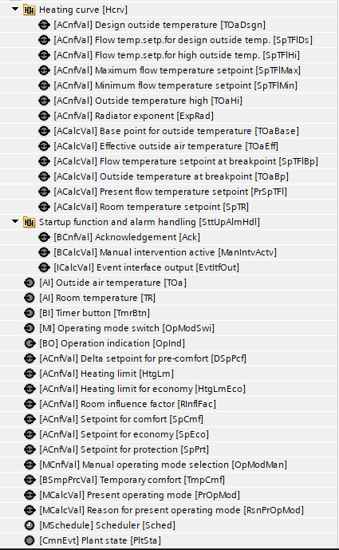
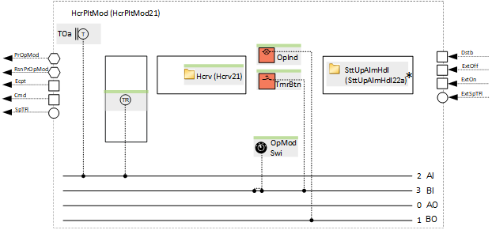
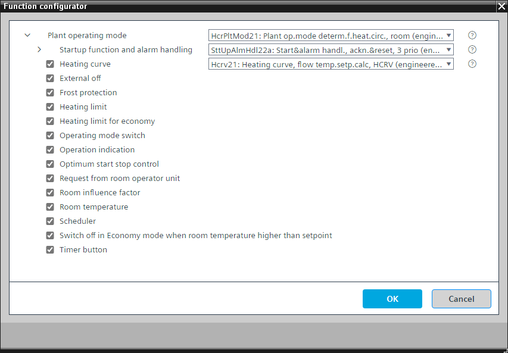

[HcrPltMod21] 用于房间供暖的供热回路的设备运行模式确定
Program block, name / node subtype: [HcrPltMod21] Plant operating mode determination for heating circuit, for room heating
Library hierarchy: Heating equipment
Family: HcrPltMod
项目树 | 图表 |
|---|---|
|
 |  *SttUpAlmHdl21a 在系统版本 < 1.5 的控制器中 |
Configurator


程序块存储在没有 I/Os. 的库中 使用auto-create and auto-connect函数创建 I/Os 和 /or 将它们连接到接口块，例如 R_A、CMD_B。或者，从包含库中预定义 I/Os 的文件夹中取出 I/Os，并从工厂中取出 /or，并将它们连接到接口块。
通过考虑各种可能的来源（例如调度程序、手动操作、房间单元）来确定工厂运行模式。
Possible operating modes
运行模式 | 描述 |
|---|---|
保护 | 液压回路关闭（泵关闭且阀门关闭）。 保护的房间设定值已激活。 房间防冻保护可以暂时将运行模式切换到舒适模式以加热房间。 |
经济 | 液压回路打开（泵打开且阀门跟随温度控制器的输出）。 The room setpoint for Economy is active. |
预舒适 | 液压回路打开（泵打开且阀门跟随温度控制器的输出）。 Pre-Comfort 的房间设定值（由 Comfort 的房间设定值减去 Pre-Comfort 的增量设定值计算得出）已激活。 |
舒适 | 液压回路打开（泵打开且阀门跟随温度控制器的输出）。 The room setpoint for Comfort is active. |
离开 | 液压回路关闭（泵关闭且阀门关闭）。 房间防冻保护未激活。 此操作模式仅在通电后的启动过程中或在打开阻止设备运行的功能的参数时在很短的时间内有效。 |
操作模式显示在 BACnet 上，具有多状态计算值“当前操作模式”，状态为“保护”、“经济”、“预舒适”、“舒适”和“关闭”。
程序中的一个参数被预设以防止设备运行。这对于测试数据点很有用。必须将其关闭才能启动设备。
"Startup function and alarm handling" controls the startup behavior of the plant after power-on.启动后有一个延迟，“DlySttUp”，大约 50 秒。 Do not change this delay.更改延迟“DlyOn”，以便每个工厂的延迟不同。这可确保工厂相继启动，并且不会使电气系统过载。还有来自工厂的所有故障和警报的收集和汇总。如果需要本地报警灯和/or 复位按钮，则可以选择替代方案。
Outside air temperature
外部温度 [TOa] 在未过滤和过滤的情况下使用。滤波产生两个不同的衰减信号。
信号名称 | 描述 | 滤波器常数 | 使用 |
|---|---|---|---|
|
TOa | 室外温度 | 未过滤 |
|
TOaEff | 有效室外气温 | 1h |
|
TOaBldg | 室外温度，严格过滤 | 50小时（建筑常数） |
|
该程序块具有以下可选功能：
Option: Heating curve
根据加热曲线 (Hcrv21) 计算流动温度的设定值。它使用功能块 HCRV。
不同的房间设定点（取决于操作模式）被输入加热曲线并影响（增加或减少）计算出的流动温度设定点。
流动温度的设定点修正与可选的房间影响相关。
Option: External off
可连接到用于关闭工厂的程序逻辑的接口。
它进入保护模式。
Option: Frost protection
执行房间防冻保护。
如果室温低于保护设定点，它会打开设备（进入“舒适”状态）。它会再次关闭设备（进入“保护”状态），滞后值为 2 K。
此选项只能与可选的室温一起成功应用
Option: Heating limit
The heating limit is defined by an analog configuration value.
当两个过滤后的外部温度均低于加热极限值时，设备可通过调度程序自动运行。如果两个值之一超过加热极限值，则设备不会启用自动运行。
Option: Heating limit for economy
经济型加热限制由模拟配置值定义。
如果例如调度程序请求经济模式，并且两个过滤的外部温度都低于经济的加热极限值，则设备能够在经济模式下运行。如果两个值之一超过加热极限值，则设备无法在经济模式下运行。
Option: Operating mode switch (1xMI=2xBI)
读取操作模式开关的状态，通常位于电气面板的前面，状态为“自动”、“保护”和“舒适”。
Option: Operation indication (1xBO)
命令灯（通常为绿色），如果设备正在运行，则该灯亮起；如果正在进行切换操作，则该灯闪烁。
Option: Optimum start stop control
当设备处于自动模式（无手动干预或外部开或关）并由可选加热限制功能释放时，执行最佳启动停止控制（使用功能块 OSSC）。
此选项只能与可选的室温一起成功应用
Option: Request from room operator unit
可以从房间单元的设备图表中读取/written 的二进制简单过程值。它可以启动工厂。
Option: Room influence factor
经济型加热限制由模拟配置值定义。
房间设定点与室温之间的差值乘以房间影响因子。所得值连接到可选的热量曲线并影响流动温度设定点。
此选项只能与可选的室温一起成功应用
Option: Room temperature (1xAI)
创建室温模拟输入并读取其信号。
Option: Scheduler
MSCHED 类型的调度程序，具有“保护”、“经济”、“预舒适”和“舒适”状态，用于关闭和打开设备。
Option: Switch-off in Economy mode when room temperature higher than setpoint
如果当前操作模式为“经济”并且室温超过“经济”设定值，则液压回路会以 2 K 等滞后值关闭。
此选项只能与可选的室温一起成功应用
Option: Timer button (1xBI)
读取计时器按钮的状态并在指定时间（可在程序中调整）内打开设备。
姓名 | 描述 | 类型 | 报警/通知类 | 趋势/类型 | |
|---|---|---|---|---|---|
OpModMan | Manual operating mode selection | MCnfVal: Multistate configuration value | N/A | 是的，4 | |
PrOpMod | Present operating mode | MCalcVal: Multistate calculated value | No | 是的，4 | |
RsnPrOpMod | Reason for present operating mode | MCalcVal: Multistate calculated value | No | 是的，4 | |
SttUpAlmHdl | Startup function and alarm handling | [SttUpAlmHdl22a] Startup & alarm handling, acknowledge & reset, 3 priorities | N/A | N/A | |
TOa | Outside air temperature | AI：模拟输入 | No | 是的，2 | |
SpPrt | Setpoint for protection | ACnfVal: Analog configuration value | N/A | N/A | |
SpEco | Setpoint for economy | ACnfVal: Analog configuration value | N/A | N/A | |
SpCmf | Setpoint for comfort | ACnfVal: Analog configuration value | N/A | N/A | |
DSpPcf | Delta setpoint for pre-comfort | ACnfVal: Analog configuration value | N/A | N/A | |
姓名 | 描述 | 类型 | 报警/通知类 | 趋势/类型 | |
|---|---|---|---|---|---|
OpModSwi | Operating mode switch | MI：多态输入 | No | 是的，4 | |
Sched | Scheduler | MSchedule: Multistate scheduler | N/A | N/A | |
HtgLm | Heating limit | ACnfVal: Analog configuration value | N/A | N/A | |
HtgLmEco | Heating limit for economy | ACnfVal: Analog configuration value | N/A | N/A | |
Hcrv | Heating curve | [Hcrv21] Heating curve, flow temperature setpoint calculation, with HCRV | N/A | N/A | |
OpInd | Operation indication | BO：二进制输出 | No | 是的，3 | |
TmrBtn | Timer button | BI：二进制输入 | No | 是的，4 | |
TR | Room temperature | AI：模拟输入 | No | 是的，2 | |
RInflFac | Room influence factor | ACnfVal: Analog configuration value | N/A | N/A | |
描述 |
|---|
Request from room operator unit |
Frost protection |
当室温高于设定值时，在经济模式下关闭。 |
Optimum start stop control |
External off |